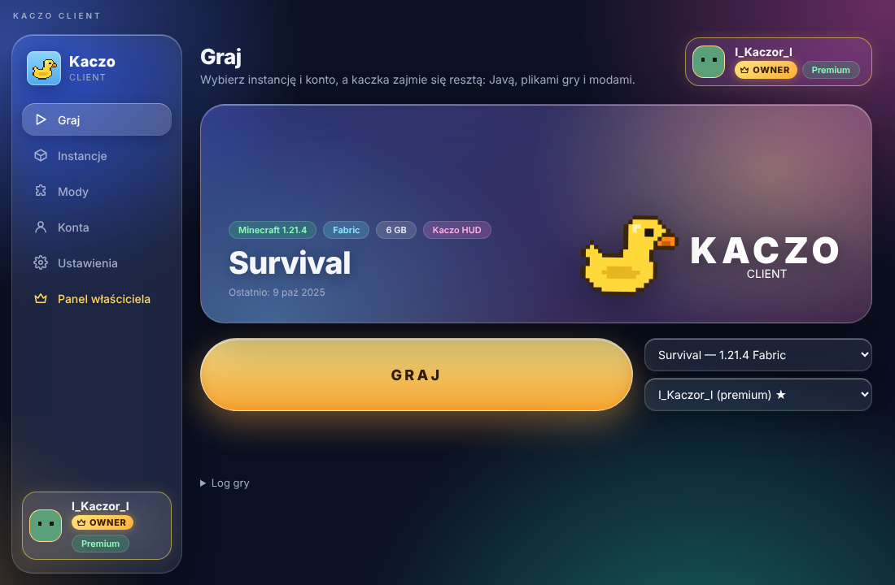

Launcher, który nie przeszkadza
- Osobne instancje: każda ma własną wersję gry, mody i światy.
- Mody z Modrinth instalujesz bez wychodzenia z aplikacji.
- Pakiet optymalizacji (Sodium, Lithium i inne) dla większej liczby FPS.
- Logowanie Microsoft albo konto offline. Java pobiera się sama.
- Polski i angielski, także w samej grze.
- Rich Presence w Discordzie.